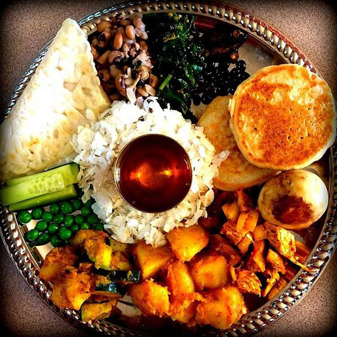
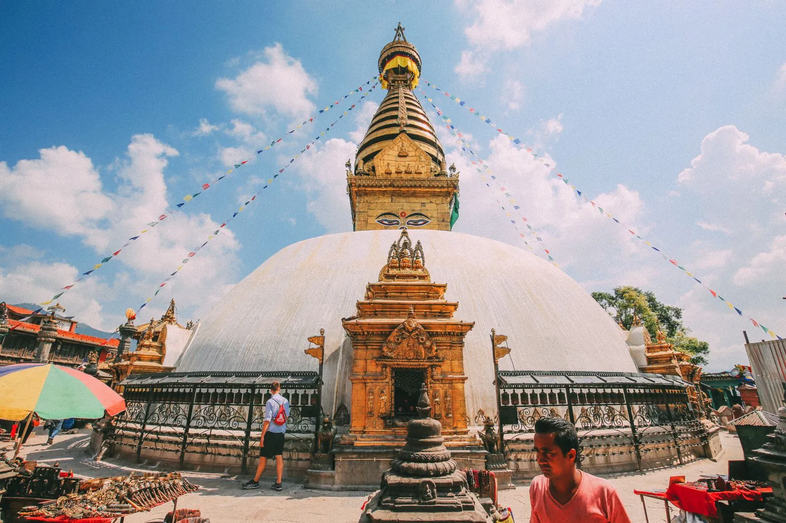

Top three activities to do at Kathmandu

Enjoy the different cuisines
Travel around the city experiencing variety of local cuisines

Visit temples around the city
Find your inner peace in the spiritual heart of Nepal

Experience new culture
Get a chance to learn about new cultures & be inspired